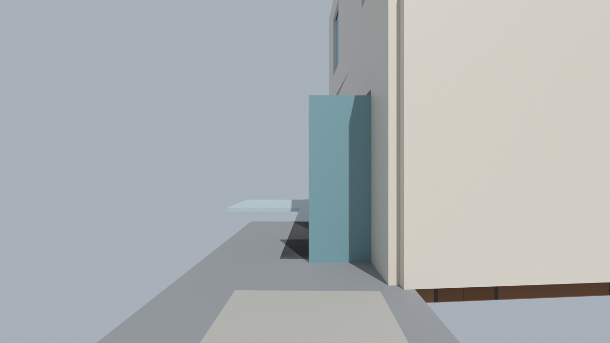
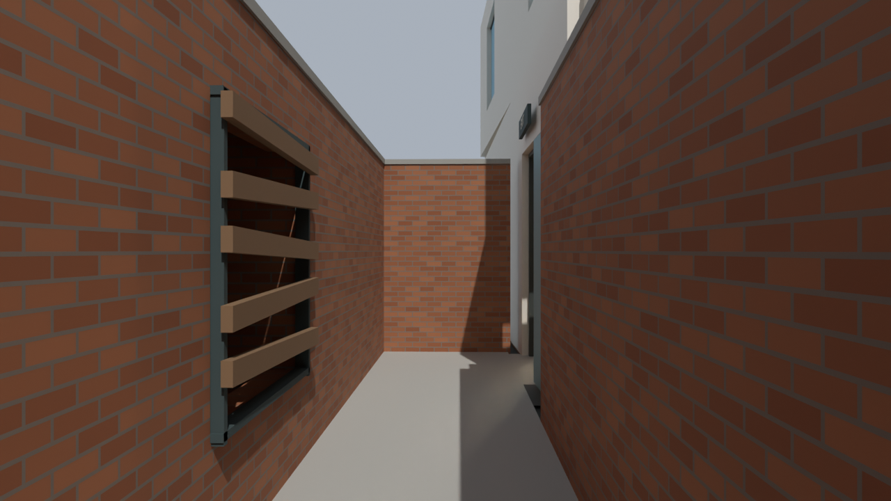
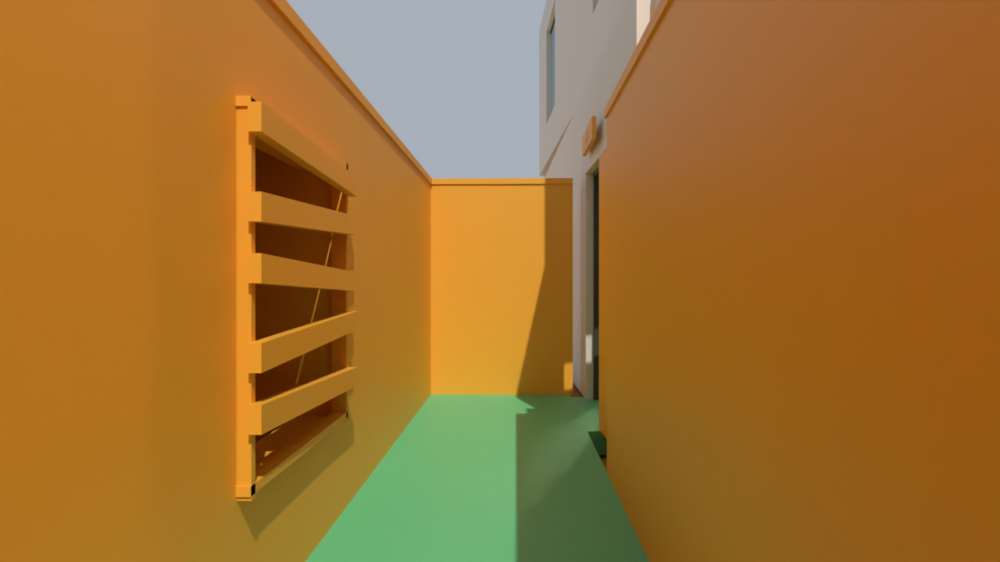
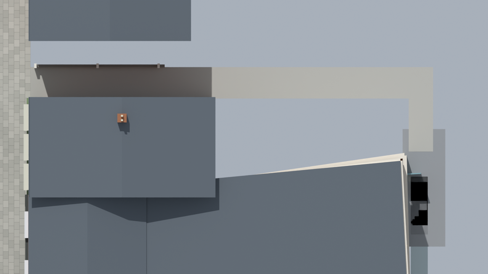
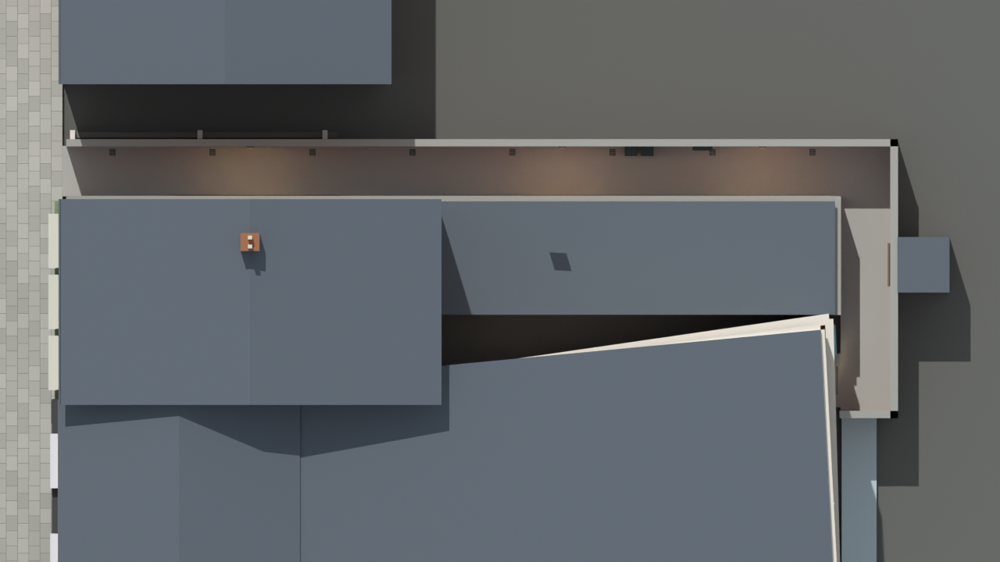
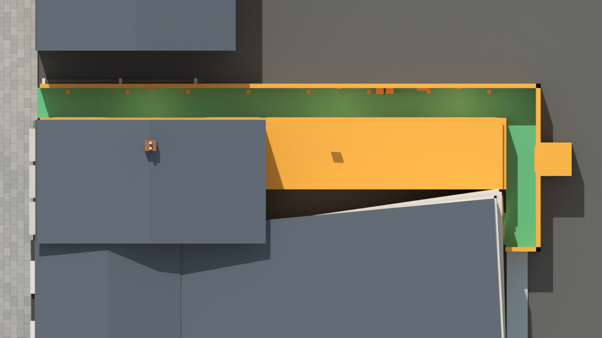

New mapping: enclosed rear alley — v30
The rear route is now a roughly 2m-wide passage between brick walls, with a tight turn to the pub door. New ground backing and a neighbouring service shell fill the surrounding void. The rear leaf is parked against the wall. A solid Staff Only door seals the bar-side opening. A boarded, enclosed pocket marks a future zombie entry; props hug the walls.
Saved Blender checkpoint. Purchases, barricade repair, zombie spawns and collision still need engine conversion and game testing. Wider-radius checks pass at 572 retained route samples. This is a gameplay adaptation, not a surveyed reconstruction.
What changed — 720p, 24fps comparison video
20 seconds of labelled before/after and highlighted views, with gentle camera-style zooms from rendered stills.
Download compact WebM · Changes and remaining checks
Street entrance into the alley
Utility details and clear route
Turn behind the pub
Before
After
New walls/props: gold · new route floor: green
Rear door tucked against the wall
Enclosed zombie barricade pocket
Closed bar-side service doorway
Alley layout from above
Before
After
New walls/props: gold · new route floor: green